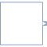

ComplexMOMultiple Output continuous control block |

|
Information
This information is part of the Modelica Standard Library maintained by the Modelica Association.
Block has one continuous Complex output signal vector.
Parameters (1)
| nout |
Value: 1 Type: Integer Description: Number of outputs |
|---|
Connectors (1)
| y |
Type: ComplexOutput[nout] Description: Connector of Complex output signals |
|---|